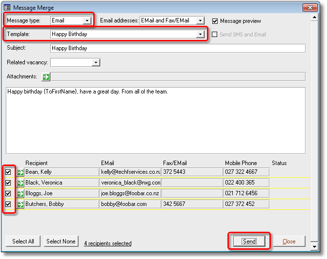
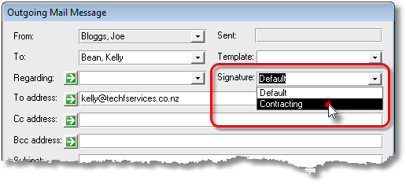
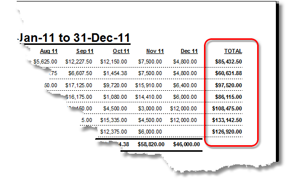

|
|
PRS News & Tips | August 2012 |
Latest News
We’ve just released PRS 8.0.8. For a full list of the changes since the previous release see the PRS Changelog web page. In particular we have made a number of performance optimisations related to the PRS InBox Tool.
To download and upgrade go to the Installing the Latest PRS Client section on our Updates web page and follow the instructions.
What’s New in PRS 8.0.8
Birthday Notifications
 in version 8.0.8
in version 8.0.8
We’ve added a Birthdays option to the Personnel Find command — combine it with other search criteria to create birthdays notifications (see the Email/SMS Selected Personnel from the Find Command example below).
Email/SMS Selected Personnel from the Find Command
in version 8.0.8
Ever wish you could Email or SMS your search results directly from the personnel Find command? Now you can using the Email/SMS selected personnel records option that we’ve added to the Personnel Find command.
For example, to send an email birthday greeting to all personnel who have their birthday today:
-
Click the Find command on the Personnel form:

-
Select the Birthday Today option and the Email/SMS selected personnel records option the press the OK button:

-
Select the Email message type; select the Happy Birthday message template; adjust the recipient selection the press Send:

|
Tip
|
You can Email or SMS the results of any search directly from the personnel Find command. |
Email Signatures Catalog
in version 8.0.8
Our new Email Signatures Catalog makes it easy to create and manage HTML email signatures for everyone in your company in one place.

Once you’ve created a Signatures Catalog all PRS users on version 8.0.8 or better will be able to choose from a list of signature names when they send a mail message from the PRS:

Each user can set their default signature under Mail options using the Tools→Options menu command:

Added Consultant Totals to Consultant YTD Billings report
in version 8.0.8
Consultant total billings now appear in the new right-hand TOTAL column of the Consultant Year to Date Billings report:

Non-standard InBox option
in version 8.0.8
The new Non-standard InBox mail option allows you to choose the Microsoft Outlook mail folder used by the PRS Inbox Tool. By default the PRS Inbox Tool loads incoming mail messages from Outlook’s default Inbox folder, most of the time this is fine, but there are situations where it makes sense to use another Outlook folder as the Inbox (for example if your mail is delivered from Google’s Gmail).

Need help?
Our Support web page explains how to get answers to PRS questions and includes links to articles on Maintaining Database Reliability and Performance and PRS Best Practice Deployment.
|
Important
|
If you no longer wish to receive this newsletter please email support@prshq.com with the word UNSUBSCRIBE in the subject line. |